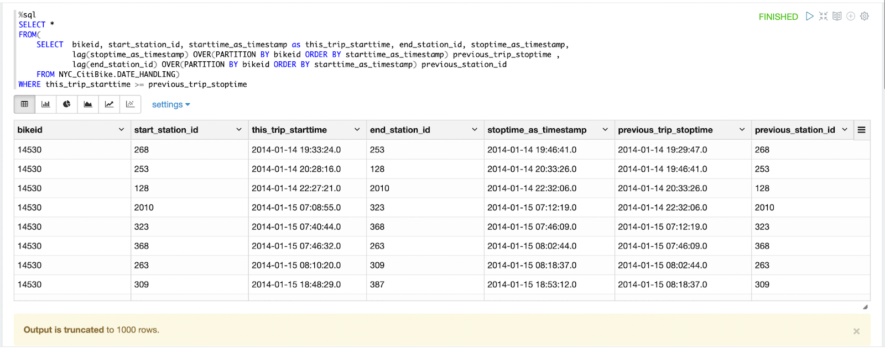
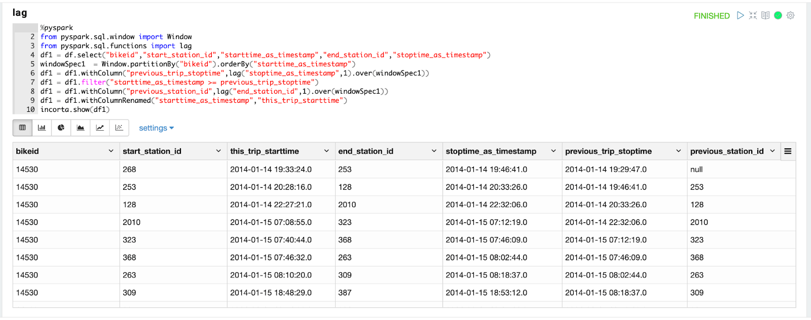
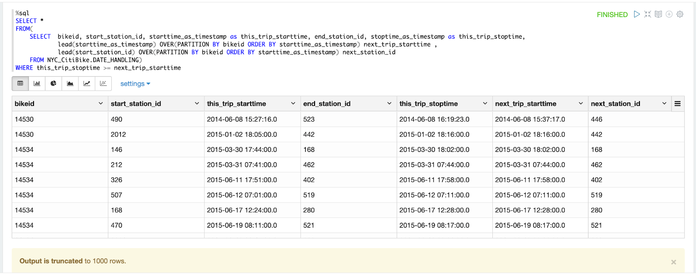
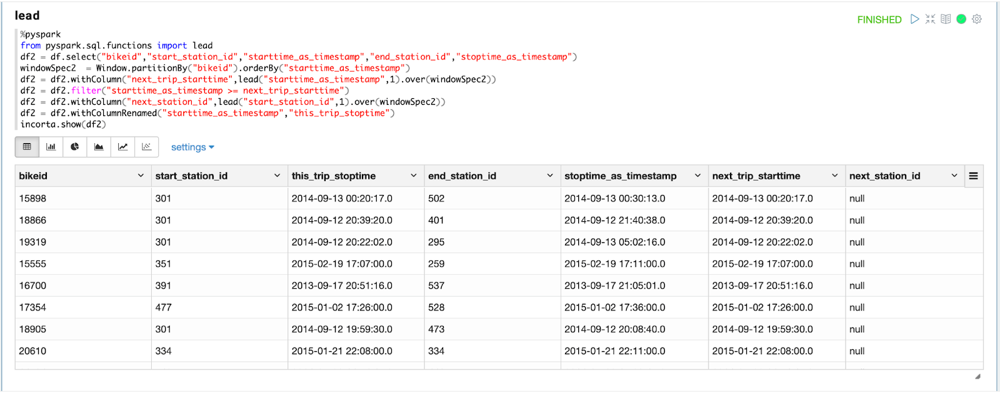

這篇 Codelab 將會示範在 PySpark 中，如何運用 window functions
以之前找閒置時間為例子，比較window fuction 中的 lag 在 SQL 和 PySpark 中不同的用法
以 CitiBike 資料為例，為了找到單車的閒置時間，需要找到此單車前一次還車的車站和時間，利用 lag 函數可以根據 bikeid 分類找到前一次的還車時間和還車車站
%sql
SELECT *
FROM(
SELECT bikeid, start_station_id, starttime_as_timestamp as this_trip_starttime, end_station_id, stoptime_as_timestamp,
lag(stoptime_as_timestamp) OVER(PARTITION BY bikeid ORDER BY starttime_as_timestamp) previous_trip_stoptime ,
lag(end_station_id) OVER(PARTITION BY bikeid ORDER BY starttime_as_timestamp) previous_station_id
FROM NYC_CitiBike.DATE_HANDLING)
WHERE this_trip_starttime >= previous_trip_stoptime
%pyspark
from pyspark.sql.window import Window
from pyspark.sql.functions import lag
df1 = df.select("bikeid","start_station_id","starttime_as_timestamp","end_station_id","stoptime_as_timestamp")
windowSpec1 = Window.partitionBy("bikeid").orderBy("starttime_as_timestamp")
df1 = df1.withColumn("previous_trip_stoptime",lag("stoptime_as_timestamp",1).over(windowSpec1))
df1 = df1.filter("starttime_as_timestamp >= previous_trip_stoptime")
df1 = df1.withColumn("previous_station_id",lag("end_station_id",1).over(windowSpec1))
df1 = df1.withColumnRenamed("starttime_as_timestamp","this_trip_starttime")
incorta.show(df1)
以 CitiBike 資料為例，為了找到單車的閒置時間，需要找到此單車使用前後的還車車站和時間以及下一次的借車車站和時間。前一個方法是利用 lag() 函數找到前一次的還車時間和還車車站，也可以利用 lead() 函數找到下一次的開始時間和開始車站
%SQL
SELECT *
FROM(
SELECT bikeid, start_station_id, starttime_as_timestamp as this_trip_starttime, end_station_id, stoptime_as_timestamp as this_trip_stoptime,
lead(starttime_as_timestamp) OVER(PARTITION BY bikeid ORDER BY starttime_as_timestamp) next_trip_starttime ,
lead(start_station_id) OVER(PARTITION BY bikeid ORDER BY starttime_as_timestamp) next_station_id
FROM NYC_CitiBike.DATE_HANDLING)
WHERE this_trip_stoptime >= next_trip_starttime
%pyspark
from pyspark.sql.functions import lead
df2 = df.select("bikeid","start_station_id","starttime_as_timestamp","end_station_id","stoptime_as_timestamp")
windowSpec2 = Window.partitionBy("bikeid").orderBy("starttime_as_timestamp")
df2 = df2.withColumn("next_trip_starttime",lead("starttime_as_timestamp",1).over(windowSpec2))
df2 = df2.filter("starttime_as_timestamp >= next_trip_starttime")
df2 = df2.withColumn("next_station_id",lead("start_station_id",1).over(windowSpec2))
df2 = df2.withColumnRenamed("starttime_as_timestamp","this_trip_stoptime")
incorta.show(df2)